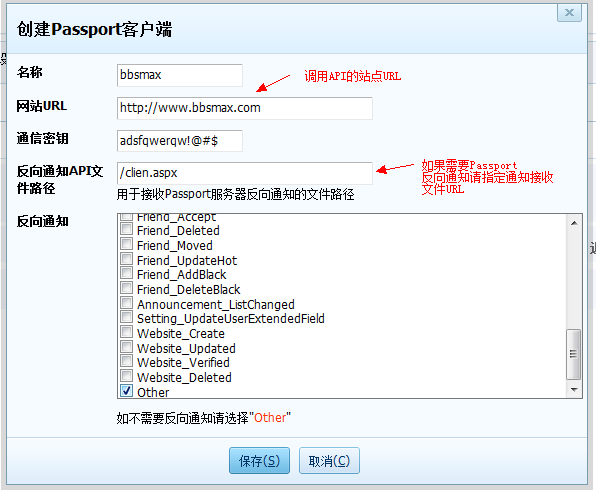
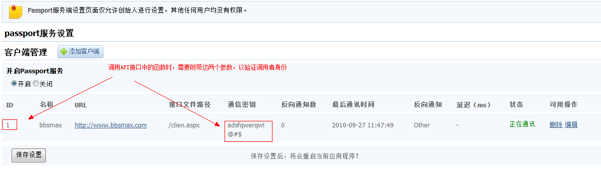
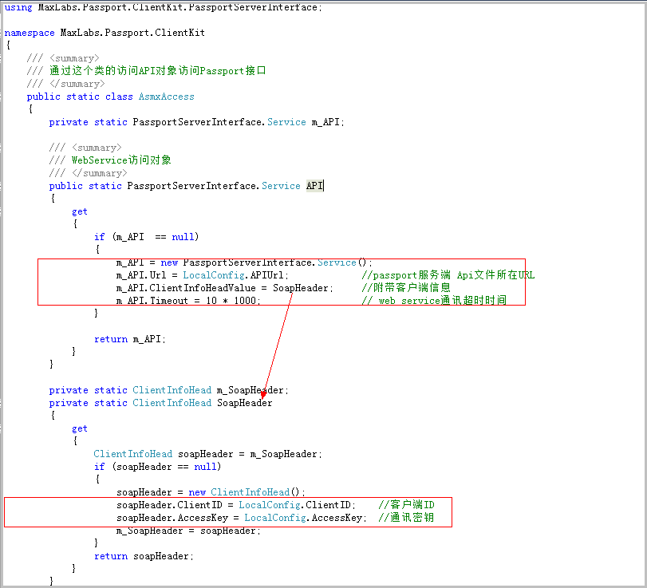

BBSMAX在5.0版本中预留了大量的Web Service接口，可以进行非常完美的整合,
如果希望其他程序整合到BBSMAX论坛，则需要您有一定的.NET开发能力。
Web Service：
安装或升级完成BBSMAX 5.0 后在论坛的根路径下有一个 api.asmx 所有的API接口均定义于这个文件。
可以通过浏览器直接访问这个比如：http://bbs.bbsmax.com/api.asmx
每个函数均做了注释，如果不明白具体的参数可以参考源代码的注释。
此接口需要后台开放，并且需要调用者在系统中注册后才能调用
Web Service接口的设置页面在5.0版本中并没有在后台菜单中显示出来,可以在地址栏中直接输入页面URL访问
http://your domain/max-admin/passport/setting-passportserver.aspx
1、开启passport服务。
2、保存设置
3、注册客户端

4、注册成功客户端后得到客户端ID，调用API时需要附带此客户端ID和通讯密钥

5、客户端ID和通讯密钥需要通过SoapHeader对象传输。附带这两个参数的方法：
请参见 MaxLabs.Passport.ClientKit项目下的
Common\AsmxAccess.cs 文件。 下图：
